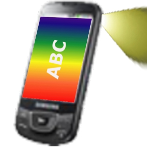

《SRE：Google运维解密》

总体观点
在Google，运维不叫Ops，叫SRE（站点可靠性工程师）。招会写代码的人，用软件工程的方法解决运维问题。这本书第一次系统公开了Google怎么保证搜索、Gmail不宕机。
核心论点两条：第一，可靠性是个“度”，不是越高越好。“错误预算”把稳定和迭代的矛盾变成算术题：用户要的是“足够可靠加持续变好”。第二，重复的手工活（toil）必须消灭。SRE至少一半时间写自动化，否则团队被救火淹没，规模越大死得越快。
它定义了一个新工种。今天大厂招SRE、谈SLO、做不甩锅的复盘、搞on-call轮值，源头都在这本书。
核心观点
-
1. 错误预算：允许系统“合法地”出点小问题
SLO“99.9%的请求200ms内成功”，剩下0.1%就是错误预算：一个月允许宕机约43分钟。预算没花完放心发版，花超了停新功能、全力修稳定。“稳定还是迭代”从扯皮变成算术题。
减肥每天允许一小块蛋糕，没超标不用自责，超标第二天多运动。用数字代替“我觉得不稳定”，开发和运维不用在会议室吵架，看仪表盘说话。 -
2. 100% 可靠是浪费
99.9%做到99.99%，成本翻几倍，用户几乎感知不到。可靠性只要“足够好”，省下的精力做用户真正需要的功能。别为用户不在乎的小数点买单。
小区门禁“基本上安全”就行。为防电影里的特工装三层虹膜识别，业主每天进门折腾五分钟——没人觉得这是好物业，只觉得添堵。 -
3. 消灭琐事：手工运维超过一半时间就必须停下来
Toil（琐事）指手工、重复、没营养、还得人肉干的活，比如每天手动重启服务。Google规矩：琐事超50%就停下所有新需求、全力做自动化。靠人肉撑的系统，规模一大必崩，人也崩。
客人少时手洗碗还行，客人多了还手洗，洗碗工崩溃、碗也洗不干净，必须上洗碗机。某团队每天两小时手动发布，自动化后十分钟搞定、零失误。 -
4. 监控只看四个黄金信号
从用户视角看系统健康就四个数：延迟（多快）、流量（多少请求）、错误（多少失败）、饱和度（资源有多满）。告警只发“能行动的”：半夜叫醒人结果是“明天再说”，这种噪音迟早让人对告警麻木。
看病看体温、血压、心率、血氧四个数，基本能判断健康，不用一上来就全身CT。某公司把告警从200条砍到30条“必须马上处理”，值班终于能睡整觉，真正的故障一次没漏。 -
5. 复盘对事不对人
复盘不许说“是谁的错”，只问“系统哪里给了犯错的机会”。人一定会犯错，“下次小心点”防不住；把系统改成“犯错也出不了大事”才算真改进。不甩锅的复盘是Google持续进步的秘密。
航空事故调查不追究飞行员个人，查的是“仪表盘是不是容易看错”。某大厂删库事故后，复盘结论是“删生产库必须双人确认加二次验证”，之后同类事故归零。 -
6. 渐进式发布：发布应该是日常小事
别攒两个月搞“大版本上线”，那是赌博。小步快走：先给1%用户（金丝雀发布），没问题再扩大，出问题一键回滚。发布越频繁、每次越小，“爆炸半径”越可控，风险越低。
新菜先让一桌客人试吃，好吃再全店推，总比直接换菜单、开业当天被全网吐槽强。某App灰度发布，一次闪退bug只影响1%用户就回滚了，全量发布就是P0事故。 -
7. on-call 不是“背锅侠”，而是有制度的轮值
半夜被叫起来不可怕，可怕的是“天天被叫、叫起来还修不好”。Google规矩：值班有补偿、有交接，“叫醒必须能处理”。频繁被叫醒说明系统该修了，不是人不够警醒。好的on-call制度倒逼系统变好。
小区保安夜班偶尔处理个把事正常，每晚被叫醒十次说明门锁系统该修了，不是保安不够警醒。把“人受的苦”转成“系统要改的项”，值班越值越轻松。
全书结构
-
第Ⅰ部分 概览
SRE（站点可靠性工程）是由软件工程师来设计和管理运维系统；将运维视作软件工程问题，用代码实现大规模系统的自治。
Google 招聘拥有高水平软件开发能力的工程师组建 SRE 团队，通过开发自动化集群管理系统 Borg 取代繁重的人工运维操作。 -
第Ⅱ部分 指导思想
拥抱风险并设定 SLI/SLO；用错误预算（Error Budget）平衡研发发布速度与线上稳定性；严格杜绝超过50%工时的无脑琐事（Toil）。
当季度错误预算还剩充足额度时，允许研发团队放手快速发布新特性；一旦故障超标耗尽预算，全团队立即冻结新需求全力排查隐患。 -
第Ⅲ部分 具体实践
on-call 制度化轮值、无指责事后复盘（Blameless Postmortem）、聚焦四个黄金信号监控、全链路过载保护与多级容灾调度。
重大事故发生后不惩罚具体敲错命令的工程师，而是深入分析为什么系统没有二次确认防护机制，通过补全系统防护根除同类隐患。 -
第Ⅳ部分 管理
建立健康包容的 SRE 工程师文化，科学分流中断性任务，推行嵌入式 SRE 模式解救深陷低水平救火泥潭的业务开发团队。
某核心业务由于架构缺陷每周报警上千次，SRE 强行介入接管其运维控制权，协助研发重构异步架构并将报警压降至每周两次。 -
第Ⅴ部分 结束语
汲取大规模分布式计算生产运维的跨行业实践经验，持续将重复人工操作转化为自愈、自适应的韧性软件基础设施。
全自动健康检查和故障漂移机制可以在服务器硬盘或机架断电时，无需人工介入，在数十秒内自动将流量和容器迁移到健康机房。